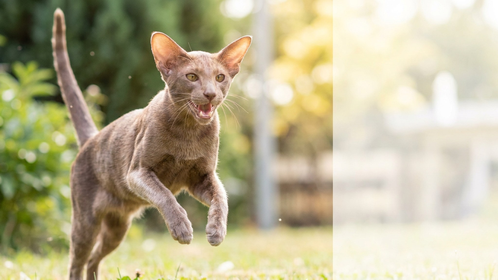

Вы только открыли дверь — и ориентальная кошка уже встречает вас у порога с развёрнутым монологом. Не жалуется и не требует: она буквально рассказывает, как прошёл ваш день с её точки зрения. Это не каприз и не тревога — это порода. Разбираемся, откуда голос, какой у ориентальной кошки характер и как выстроить с ней комфортный быт.
🐾 Питомец ведёт себя странно?
AnimaLife расшифрует поведение кошки и собаки и подскажет, что делать. Попробуйте бесплатно прямо в мессенджере.
Ориентальная кошка — прямой потомок сиамской. Именно от неё идёт знаменитая вокальность: высокий, иногда пронзительный голос и потребность вести диалог с человеком. Ориентальные кошки говорят, когда голодны, когда скучают, когда рады, когда им что-то не нравится — и просто так, в потоке общения.
Это не тревожность и не требование немедленно что-то исправить. Это способ коммуникации, заложенный в породе. Пытаться «отучить» ориентальную кошку говорить — примерно то же самое, что отучить лабрадора вилять хвостом. Гораздо продуктивнее научиться понимать, что именно она хочет сказать.
Ориентальная кошка — не та порода, которую устраивает роль «декоративного питомца». Несколько ключевых черт характера:
Ориентальная кошка не требует сверхъестественных усилий — она требует присутствия. Несколько вещей, которые делают совместный быт комфортным:
Ориентальная кошка говорит много — это фон. Но резкие изменения в привычном голосовом поведении могут быть сигналом, что стоит обратить внимание. Вот что стоит отметить и при сомнениях показать ветеринару:
Сам по себе «громкий» голос у ориентальной кошки — это норма породы. Изменение характера вокализации на фоне других перемен — повод понаблюдать и, при необходимости, проконсультироваться с ветеринаром.
🐾 Здоровье питомца под контролем
AI-ветеринар, дневник здоровья и персональные советы для вашего питомца — установите AnimaLife бесплатно.
🐾 Понравился разбор?
Подпишитесь на канал — каждый день разбираем по одному тревожному симптому у кошек и собак: что в пределах нормы, а когда пора к врачу. Подпишитесь, чтобы не пропустить разбор, который может спасти здоровье вашего питомца.
Материал носит информационный характер и не заменяет очную консультацию ветеринара.